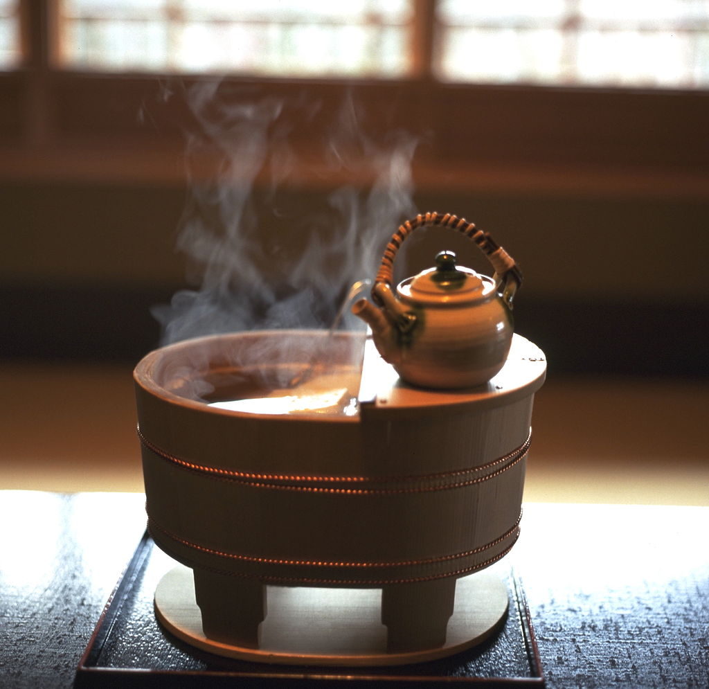

Пуэр
Заголовок второго уровня
Пуэ́р (кит. 普洱茶, пиньинь pǔ'ěrchá, палл. пуэрча, буквально: «чай из Пуэра») — постферментированный чай. Отличается специфической технологией производства: собранные листья, обработанные до уровня зелёного чая, подвергаются процедуре микробной ферментации — естественному либо искусственному (ускоренному) старению[1]. Ферментация происходит под действием Aspergillus acidus, плесневых грибов рода Аспергилл[2].
Главной отличительной чертой пуэров является стадия ферментации, которая может занимать различное время. Участвующие в ней микроорганизмы заметно меняют химический состав и вкусовые качества чая.
Разновидности
Традиционно пуэр получается в результате созревания сырца máochá (毛茶). В зависимости от технологии этот процесс занимает несколько дней. Затем полученный продукт может поставляться на рынок под названием «мао-ча» или пройти дальнейшее дозревание. Во втором случае его прессуют в формы, и он хранится в необходимых условиях. Время дозревания может меняться от месяцев до десятков лет. Чай, прошедший стадию дозревания, называется «шен-пуэр», shēngchá (生茶).
В 1973 году компания Kunming Tea Factory начала применять новый процесс многократно ускоренной ферментации, wòduī (渥堆). Вскоре компания чайная фабрика Мэнхай внедрила эту технологию и стала производить новый вид чая, «шу-пуэр», shúchá (熟茶). Он также стал продаваться как в прессованном, так и в рассыпном виде.
Чайная церемония Онлайн

© Побоцев Анатолий Егорович